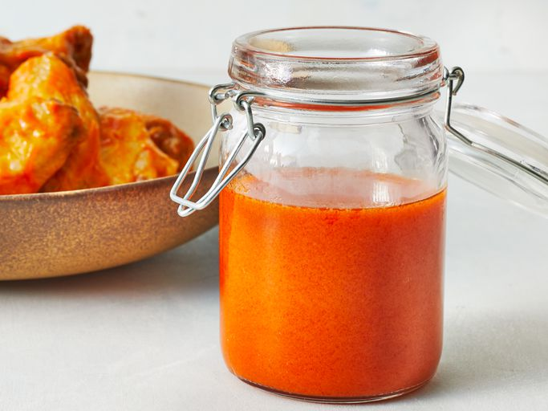
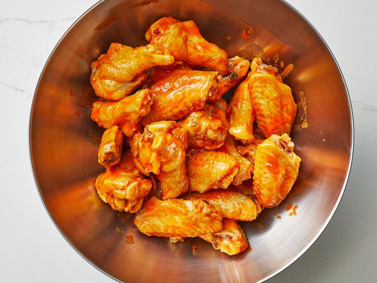

Buffalo Chicken Wing Sauce
Home

Description
Hers's the delicious Buffalo-flavoured chicken wing sauce. It's quick, simple and easy to make sauce that's booming with flavour. And all it takes are a few minutes on the stove.
Ingredients
-
2/3 cup hot pepper sauce (such as Frank's RedHot)
-
1/2 cup cold unsalted butter
-
11/2 tablespoons white vinegar
-
1/4 teaspoon Worcestershire sauce
-
1/4 teaspoon cayenne pepper
-
1/8 teaspoon garlic powder
-
salt to taste
Steps
- Gather all ingredients.
- Combine all ingredients in a pot over medium heat. Bring to a simmer while stiring with a whisk.
- As soon as the liquid begins to bubble on the side of the pot, remove from heat, stir with the whisk, and set aside for use.
- Enjoy!
